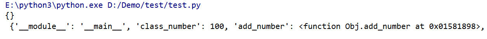
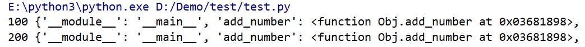
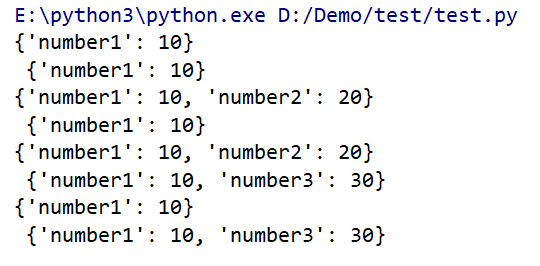

模块
使用import可以直接导入模块，导入模块的同时会执行其中的代码，但是同一个模块的代码不论直接import多少次，都只执行一次
在python下py后缀名的文件就是模块
方法一：
1 | import m |
方法二：
1 | from m import g_number1 |
方法三：
1 | from m import * |
模块的私有属性（不会被直接访问到的）以单下划线开头的全局变量不能被其他模块以import xxx from *的方式访问
1 | _pnumber = 10 |
访问模块私有的属性
1 | import m |
python面向对象
类
python中的类，class类名（基类名称）：
在python3中所有的类都默认继承自object
1 | class Student: |
类属性的添加和使用，可以使用类名在类内或者类外动态的添加新的类属性。虽然类名和实例都可以访问到类属性，但是更推荐使用类名。不能使用实例修改类属性
1 | class Obj(object): |
__dict__是一个字典，保存了当前的实例或者对象中的所有属性，包括内置属性和自定义属性
1 | print(obj.__dict__, "\n", Obj.__dict__) |

可以在成员方法或类外使用类名动态的添加属性
1 | class Obj(object): |

实例属性就是使用self或者实例名定义出来的属性，每一个实例都会拥有自己的实例属性，同样可以使用类名或者self动态添加属性
1 | class Obj(object): |

1 | class Obj(object): |

属性
1 | class Obj(object): |
类的”私有”属性，所有只以双下划线开头的属性会被认为是私有的，不能[直接]被外界访问到
1 | class Obj(object): |
实际上的私有知识解释器给属性进行了更名，_类名+属性名
但是可以使用这种方式进行访问Obj._Obj__number
所有以单下划线开头的命名，约定俗成都是不可访问的
继承
继承的形式，class 类名(父类名, … )
1 | class CBase1(object): |
判断一个类是不是另一个类的子类
1 | print(issubclass(CObj, CBase1)) |
输出当前所有父类组成的元祖
1 | print(CObj.__bases__) |
显示当前类的继承原型链
1 | print(CObj.mro()) |
python存在继承关系时，不会出现二义性问题，当访问一个属性的时候，解释器会遍历原型链，首先找到谁就用谁
异常
如果一部分代码可能会触发异常，就应该使用try进行包含
1 | try: |
NameError是一个异常对象的类名，这里表示会堆找不到名称这个异常捕获并处理
try finally 无论是否产生异常，都保证执行代码
1 | try: |
通用的异常处理写法
1 | try: |
抛出异常
1 | name = input("请输入姓名：") |

产生异常的时候，异常的类型可以在输出窗口看到
python特殊函数
特殊函数filter ：接收一个序列，将序列中的每一个元素传入到提供的函数中进行判断，如果函数的返回值位True那么将这个元素添加到新的的序列中
1 | # 筛选出所有字符 |
特殊函数reduce：接收一个序列和函数，函数必须拥有两个参数。首先将序列的第一个元素和第二个元素作为参数传入到函数中，之后的每一次都将前一次的计算结果和下一个元素传入到函数中，最终返回计算结果
1 | # 必须要有两个参数 |
特殊函数map：map要求传入一个函数以及一个或多个的可迭代序列，函数的参数个数必须和序列的数量相同，map会在内部分别将每一个序列的元素传入到提供的函数中，并且把函数的返回值组合成一个新的可迭代序列
1 | def rep_string(s, time): |
lambda表达式
lambda表达式的语法 lambda 参数名：实现
实现部分只能有一条语句，且不能有 return，整个实现部分的结果就是函数的返回值
1 | print(list(map(lambda a, b:a * b, "abcd", [1, 2, 3, 4]))) |
闭包
闭包指内部函数使用外部函数作用域的变量
1 | def outer(factor): |
1 | fun = outer(10) |
1 | print(fun(20)) |
装饰器：在闭包的基础上，内部函数调用了外部作用于提供的函数
1 | def outer(func): |
有些时候，我们需要给一些特定的函数添加功能，但是不能修改函数的名称，函数的参数个数以及函数的调用形式，可以在装饰器中实现功能
1 | def outer(func): |
1 | # 传入了一个函数，返回了一个新的函数 |
@outer 在python中@的是语法糖
语法糖是为了让代码可读性更高使用更简单
1 | arr[10][10] -> *(*(arr+10)+10) |
常用模块
时间模块time
1 | import time |
随机数模块random
1 | import random |
目录和文件操作os
1 | import os |
struct模块
1 | import struct |